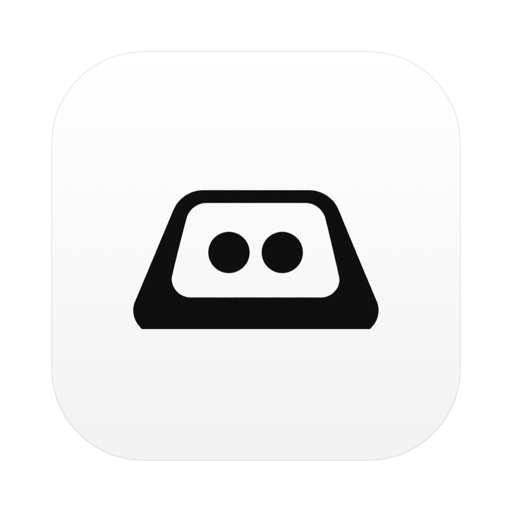

Clack
A quiet keystroke counter for your menu bar.
brew install --cask ay-chang/tap/clack
What it does
Counts the keys you press
A number in the menu bar that goes up as you type. Click it for today's total, a seven-day chart, your best day, and your all-time count.
Stores one integer per day
That is the whole data model. Not which key, not what you typed, not which app you were in — just a daily total in a small JSON file on your own Mac.
Never touches the network
No telemetry, no analytics, no accounts, no sync. Verify it yourself:
grep -r URLSession Sources/ returns nothing.
Stays out of the way
The event tap runs on its own thread and does one integer increment per key press. The UI redraws once a second, the disk is written once a minute. An idle Mac does essentially nothing.
Can't see your passwords
macOS cuts off every event tap while a password field is focused. Clack included — those keystrokes are never seen and never counted.
One note before you install
It needs Accessibility permission
macOS treats reading keyboard events as privileged, and offers no narrower "count but don't read" permission — so every app of this kind needs it. Clack's tap is created in listen-only mode, which means the system discards anything it returns: it cannot modify, block, or inject a keystroke. The full accounting is in PRIVACY.md.